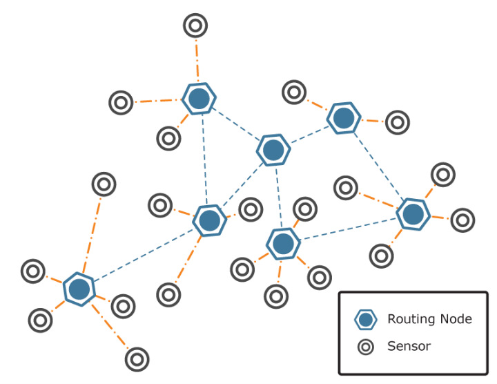
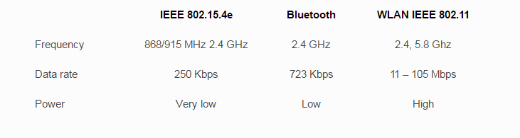
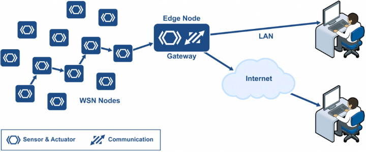
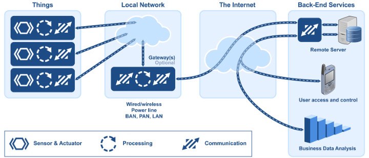
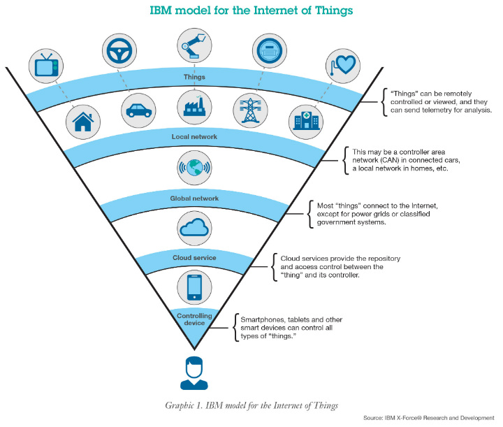

แนวนิด Internet of Things นั้นถูกคิดขึ้นโดย Kevin Ashton ในปี 1999 ซึ่งเขาเริ่มต้นโครงการ Auto-ID Center ที่มหาวิทยาลัย Massachusetts Institute of Technology หรือ MIT จากเทคโนโลยี RFID ที่จะทำให้เป็นมาตรฐานระดับโลกสำหรับ RFID Sensors ต่างๆที่จะเชื่อมต่อกันได้ ต่อมาในยุคหลังปี 2000 โลกมีอุปกรณ์อิเล็กทรอนิกส์ออกมาเป็นจำนวนมากและมีการใช้คำว่า Smart ซึ่งในที่นี้คือ smart device, smart grid, smart home, smart network, smart intelligent transportation ต่างๆเหล่านี้ล้วนมีโครงสร้างพื้นฐานที่สามารถเชื่อมต่อกับโลกอินเตอร์เน็ตได้ ซึ่งการเชื่อมต่อเหล่านั้นเองก็เลยมาเป็นแนวคิดที่ว่าอุปกรณ์เหล่านั้นก็ย่อมสามารถสื่อสารกันได้ด้วยเช่นกันโดยอาศัยตัว Sensor ในการสื่อสารถึงกัน นั่นแปลว่านอกจาก Smart devices ต่างๆจะเชื่อมต่ออินเตอร์เน็ตได้แล้วมันยังสามารถเชื่อมต่อไปยังอุปกรณ์ตัวอื่นได้ด้วยโดย Kevin นิยามมันไว้ตอนนั้นว่าเป็น “internet-like” หรือพูดง่ายๆก็คืออุปกณ์อิเล็กทรอนิกส์สามารถสื่อสารพูดคุยกันเองได้ ซึ่งศัพท์คำว่า “Things” ก็แทนอุปกณ์อิเล็กทรอนิกส์ที่กล่าวมาก่อนหน้านี้นั่นเอง
ตัวแปลสำคัญสำหรับ Internet of Things ที่ใช้ในการสื่อสารนั้นไม่เพียงแต่ Internet network เพียงเท่านั้นแต่ยังมีตัวแปลอื่นเข้ามาเกี่ยวข้องอีกนั่นคือ Sensor node ต่างๆจำนวนมากที่ทำให้เกิด wireless sensor network (WSN) ให้กับอุปกรณ์ต่างๆสามารถเชื่อมต่อเข้ามาได้ ซึ่งเจ้า WSNs นี่เองสามารถตรวจจับปรากฏการณ์ต่างๆ (physical phenomena) ในเครือข่ายได้ด้วย ยกตัวอย่างเช่น แสง อุณหภูมิ ความดัน เป็นต้น เพื่อส่งค่าไปยังอุปกรณ์ในระบบให้ทำงานหรือสั่งงานอื่นๆต่อไป

การพัฒนา Internet of Things นั้นนอกจากจะพัฒนาเทคโนโลยีในฝั่ง Hardware ได้แก่ processors, radios และ sensors ซึ่งจะถูกรวมเข้าด้วยกันเรียกว่า a single chip หรือ system on a chip (SoC) แล้วก็ยังพัฒนา WSN ไปพร้อมๆกันด้วย และเมื่อพูดถึงการเชื่อมต่อปัจจุบันได้มีการพัฒนาเทคโนโลยีสำหรับการเชื่อมต่อสำหรับ Internet of Things หรือ Access technology มีอยู่ 3 ตัวได้แก่
โดยในแต่ละ Access technologies นั้นมีการส่งข้อมูลที่แตกต่างกันดังนี้

เมื่อมีโครงข่าย Sensor nodes แล้วก็จำเป็นจะต้องมี Gateway Sensor Nodes เพื่อจะเชื่อมต่อไปยังโลกอินเตอร์เน็ตด้วย โดยตัว Gateway นี้จะทำหน้าที่เชื่อมต่อไปยังเครือข่าย Internet ให้อุปกรณ์ทั้งหมดในโครงข่าย Sensor nodes ทั้งหมดส่งข้อมูลเข้าสู่อินเตอร์เน็ตได้นั่นเอง และเจ้า Gateway ที่ว่านี้ก็จะอยู่ภายใต้ Local network ซึ่งจะมีการกำหนดกันต่อไปว่า Gateway ภายใต้ Local network ที่ว่านั้นจะให้เชื่อมต่อไปยัง Internet ได้ด้วยหรือไม่ถ้าไม่ได้อุปกรณ์ที่เชื่อมเข้ามาใน Gateway ก็อาจจะสื่อสารกันได้เฉพาะภายใน Local network เองได้เท่านั้น


ปัจจุบันมีการแบ่งกลุ่ม Internet of Things ออกตามตลาดการใช้งานเป็น 2 กลุ่มได้แก่

ตัวอุปกรณ์ IoT devices ต่างๆนั้นจะเป็นจะต้องมีหมายเลขระบุเพื่อให้ใช้ในการสื่อสารเปลี่ยนเสมือนที่อยู่บ้านของเรานั่นเอง และการที่จะทำให้อุปกรณ์เหล่านั้นที่มีอยู่เป็นจำนวนมาก(รวมถึงอนาคตที่จะผลิตกันออกมา) จำเป็นจะต้องใช้ IP Address vesion 6 หรือ IPv6 มากำกับเพื่อให้ได้หมายเลขที่ไม่ซ้ำกันและต้องใช้ได้ทั้ง
และที่กล่าวมาทั้งหมดคือส่วนสำคัญต่างๆของ Internet of Things ที่กำลังเกิดขึ้นและเป็นเทรนด์ที่กำลังมาแรงอยู่ในขณะนี้ หวังว่าบทความนี้จะช่วยให้หลายคนเข้าใจภาพของ IoT ได้ดีขึ้น สิ่งสำคัญคือศัพท์คำนี้จึงไม่ได้หมายถึง Smart device อย่าง นาฬิกาอัจฉริยะ อย่าง Apple Watch หรือสายรัดข้อมือเพื่อสุขภาพเท่านั้น แต่มันยังครอบคลุมไปถึงอุปกรณ์ต่างๆอีกหลากหลายล้านตัวกว้างไกลไปยังหลากหลายอุตสาหกรรมอีกด้วย โดยในอนาคตคุณจะได้เห็น ไมโครเวฟคุยกับตู้เย็นให้สั่งอาหารมาเติม เครื่องซักผ้าคุยกับทีวีบอกคุณว่าผ้าซักเสร็จแล้ว สายรัดข้อมือจะคุยกับรถพยาบาลแจ้งให้ไปรับตัวผู้ป่วยที่กำลังหัวใจวาย เหล่านี้คืออนาคตของ Internet of Things ที่สิ่งต่างๆกำลังจะคุยกันได้